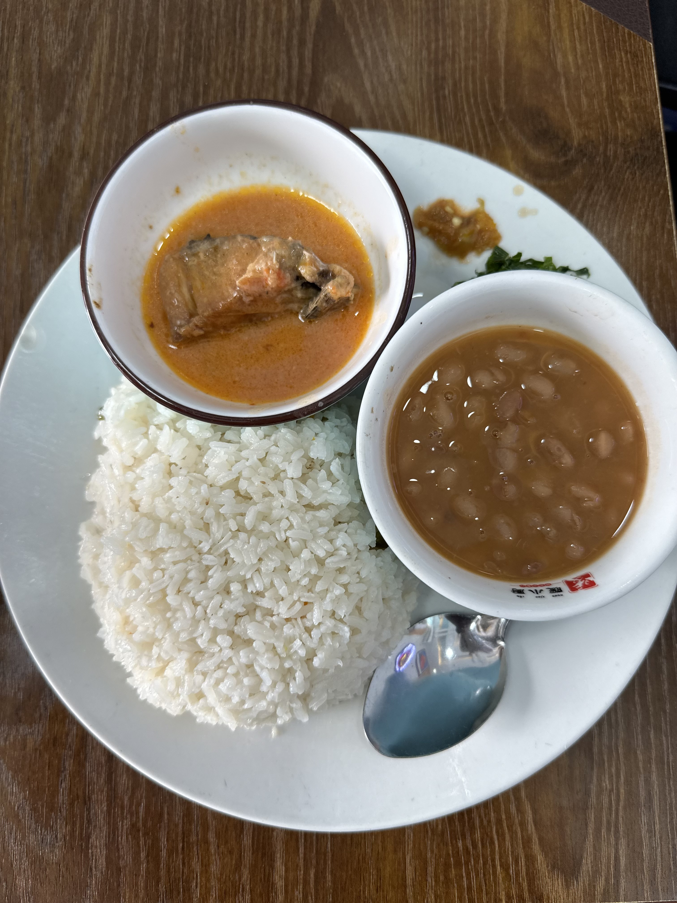

Vyakula Vyetu Bora

Wali Samaki
Wali wa nazi, maharage ya nazi, pamoja na mchuzi wa samaki
Tsh 2,500/=
Tambi za Mayai
Tambi nzuri, mayai ya kuchemsha, viazi vya ku rosti, pamoja na kachumbali
Tsh 3,000/=
Wali Nyama
Wali wa nazi, nyama ya ng'ombe, mboga za majani, pamoja na mchuzi wa nyama
Tsh 2,500/=